Wave vectors: $\vec{k_1}=k_t\vec{e_x}+\beta\vec{e_z}$ and $\vec{k_2}=-k_t\vec{e_x}+\beta\vec{e_z}$
- Norm: $k_1=k_2=k=k_0 n=\frac{2\pi}{\lambda} n$
- Components: $\beta=k\cos(\theta)$ and $k_t=k\sin(\theta)$
- $\beta^2+k_t^2=k^2$
Plane waves
- $\underline{E}_1(x,z,t)=E_0\exp\left(i\left(k_tx+\beta z-\omega t\right)\right)$
- $\underline{E}_2(x,z,t)=E_0\exp\left(i\left(-k_tx+\beta z-\omega t\right)\right)$
When the two waves overlap: $$\underline{E}^{\theta,+}(x,z,t)=\underline{E}_1(x,z,t)+\underline{E}_2(x,z,t)=2E_0\cos(k_tx)\exp\left(i\left(\beta z-\omega t\right)\right)$$
- Propagation in the z-direction with the wave vector $\beta \vec{e_z}$
- Stationary field in the x-direction, fringe spacing: $d=\frac{\lambda}{2n\sin(\theta)}$
Resulting wave obtained by subtracting the two plane waves: $$\underline{E}^{\theta,-}(x,z,t)=\underline{E}_1(x,z,t)-\underline{E}_2(x,z,t)=2iE_0\sin(k_tx)\exp\left(i\left(\beta z-\omega t\right)\right)$$
- Propagation in the z-direction with the wave vector $\beta \vec{e_z}$
- Stationary field in the x-direction, fringe spacing: $d=\frac{\lambda}{2n\sin(\theta)}$
The EM field of a mode can be written as $\begin{pmatrix} \vec{\underline{E}}(x,y,z,t)\\\vec{\underline{H}}(x,y,z,t)\\\end{pmatrix}=\begin{pmatrix}\vec{\underline{e}}(x,y)\\\vec{\underline{h}}(x,y)\end{pmatrix}\exp\left(i\left(\beta z-\omega t\right)\right)$ and each mode is characterized by:
- its electric/magnetic field distribution $\vec{\underline{e}}(x,y)/\vec{\underline{h}}(x,y)$ in the transverse plane
- its propagation constant $\beta$ or by its effective index defined as: $\boxed{n_{\text{eff}}=\frac{\beta}{k_0}}$
For a 2D uniform medium:
- $e(x,y)=\cos(k_0\sqrt{n^2-n_{\text{eff}}^2}x)$ or $e(x,y)=\sin(k_0\sqrt{n^2-n_{\text{eff}}^2}x)$
- $n_{\text{eff}}=n\cos(\theta) \leq n$ and $\theta$ can take on any value
There are also evanescent modes for which $\beta$ and $n_{\text{eff}}$ are purely imaginary
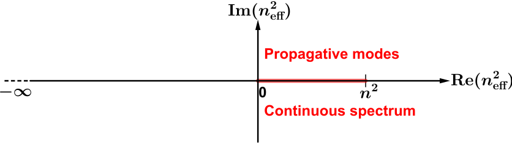
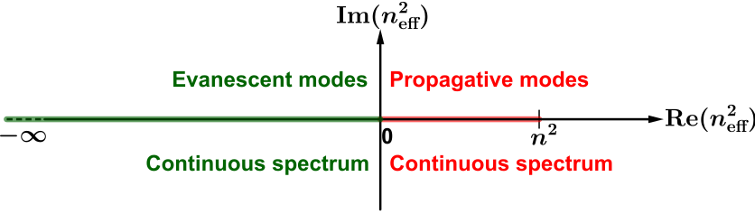
$$\Delta \underline{E} +k_0^2n^2 \underline {E} = 0$$ $$\left(\Delta_t + k_0^2n^2\right)\underline{e}=\beta^2\underline{e}$$ $\Longrightarrow \beta^2$ and $\underline{e}$ are respectively the eigenvalue and the eigenfunction of the differential operator $\Delta_t + k_0^2n^2$
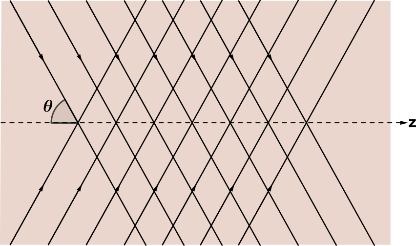
Example of TE modes
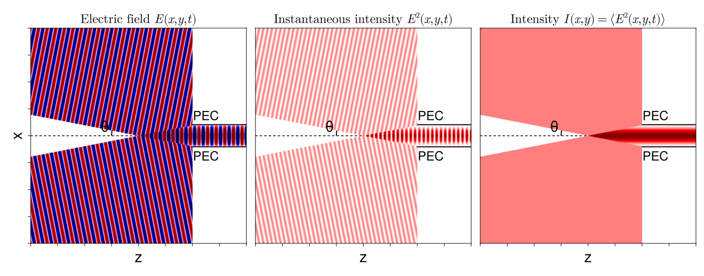
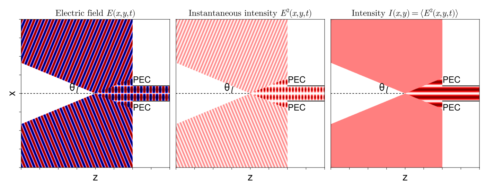
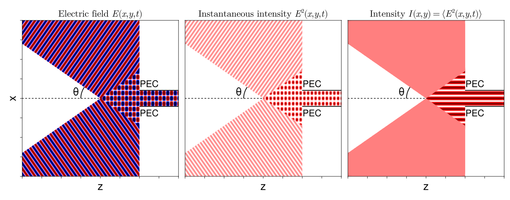
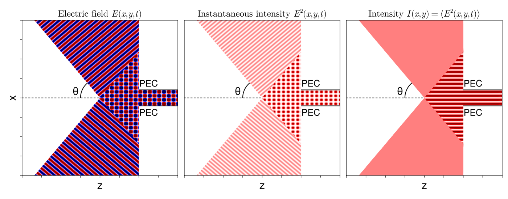
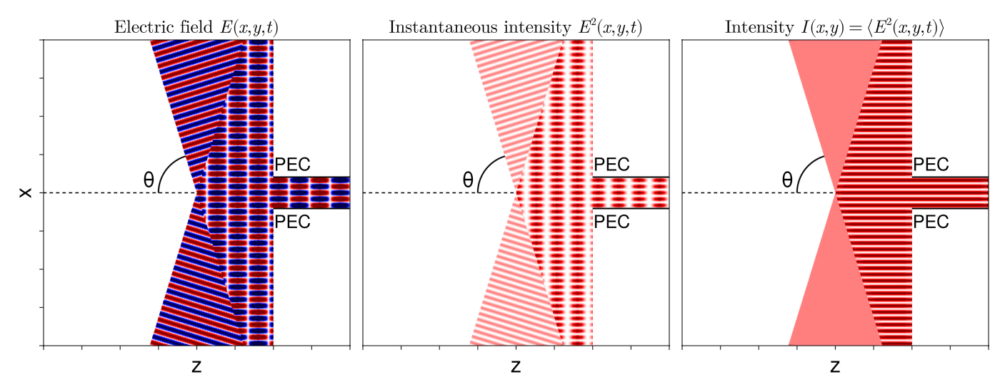
The waveguide width is $2a=p\frac{\lambda}{2n\sin(\theta)}$ with $p\in \mathbb{N}^*$ so that: $$\theta=\arcsin\left(\frac{p\lambda}{4na}\right),\text{ } p\le\frac{4na}{\lambda}$$
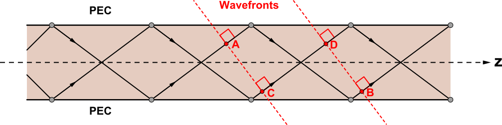
$$\text{OPD}=(AB)-(CD)+\lambda=4na\sin(\theta)+\lambda=p\lambda$$ $$n_{\text{eff}}^2=n^2\left[1-\left(\frac{p\lambda}{4na}\right)^2\right]\text{ with } p\in \mathbb{N}$$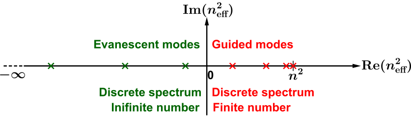
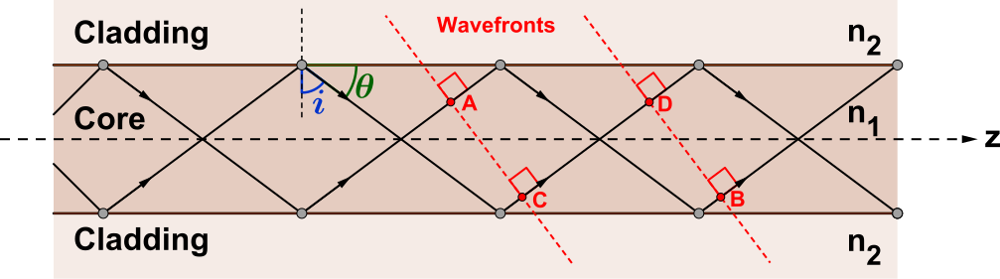
- Total internal reflexion (TIR) at the interface core/cladding: $i\ge \arcsin\left(\frac{n_2}{n_1}\right) \Longrightarrow \frac{n_2}{n_1}\le \cos(\theta)\le 1 \Longrightarrow n_2\le n_{\text{eff}}\le n_1$
- $\text{OPD}=4n_1a\sin(\theta)+2\frac{\phi_r}{k_0}=p\lambda \text{ with } p\in \mathbb{N}$
NB: $\phi_r$ is given by the Fresnel's coefficient of reflection and depends on $n_1$, $n_2$, $\theta$ and the polarization state
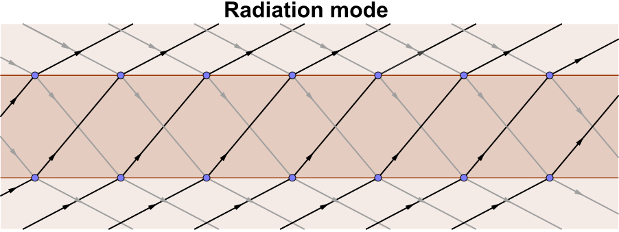
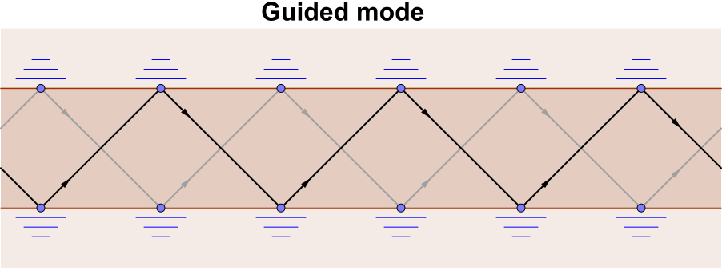
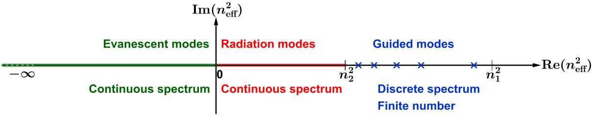
- The modes are all orthogonal to one another $\Longrightarrow$ each mode propagates independently of the others
- The set of eigenfunctions of the differential operator (guided modes + radiation modes + evanescent modes) constitutes a complete orthogonal basis of solutions of Maxwell's equations
At a given wavelength, we can project the field at $z = 0 $ on the modes basis: $$\underline{E}(x,y,z=0)=\sum_{\substack{\text{guided} \\ \text{modes}}}A_m\underline{e}_{m}(x,y)+\int_{\substack{\text{continuous} \\ \text{spectrum}}}A(\beta)\underline{e}_{\beta}(x,y)d\beta$$ where $A_m=\iint\underline{E}(x,y,z=0)\underline{e}_{m}(x,y) dx dy$ (idem for $A(\beta)$).
To obtain the field at $z=L$, each component must be multiplied by its phase term which is due to the propagation: $$\underline{E}(x,y,z=L)=\sum_{\substack{\text{guided} \\ \text{modes}}}A_m\underline{e}_{m}(x,y)e^{i\beta_m L}+\int_{\substack{\text{continuous} \\ \text{spectrum}}}A(\beta)\underline{e}_{\beta}(x,y)e^{i\beta L}d\beta$$
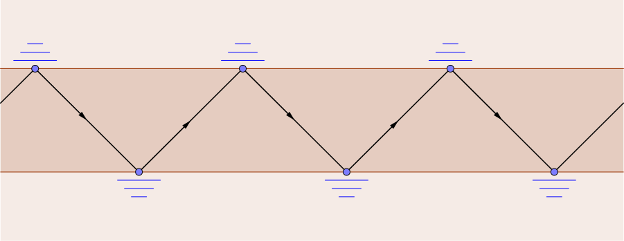
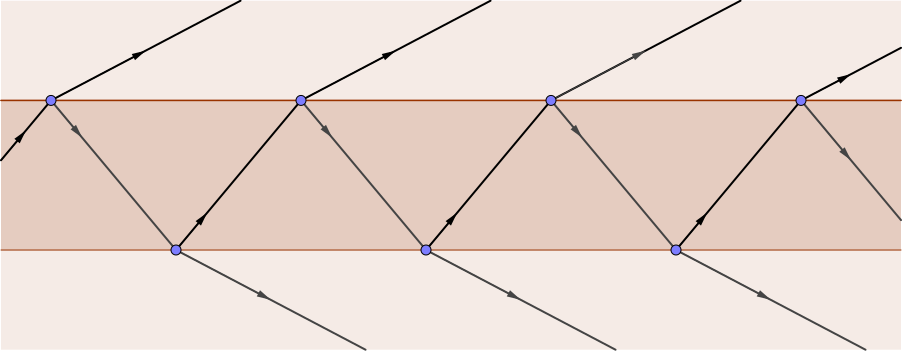
$\Longrightarrow$ the mode propagates whilst being attenuated due to partial reflection
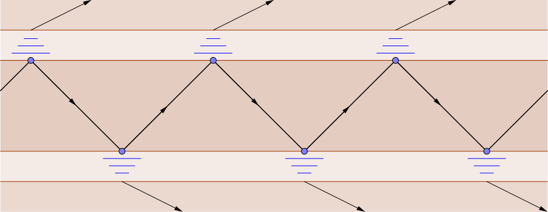
$\Longrightarrow$ the mode propagates whilst being attenuated due to the tunnel effect (frustrated reflection)
- Leaky modes propagate with attenuation: their propagation constant $\beta$ is complex. Their linear losses are $\alpha=2\text{Im}(\beta)$ (in m-1)
- They form a discrete but infinite set of solutions
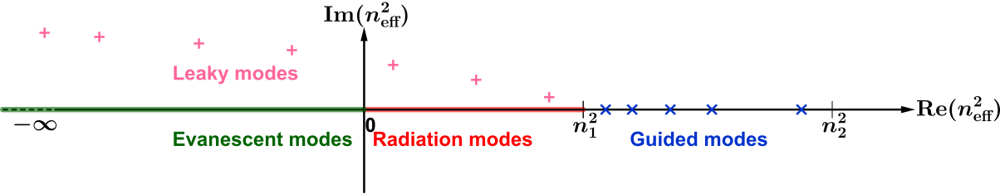
- Leaky modes do not belong to the spectrum of the differential operator (because they are not bounded)
- Leaky modes are solutions of Maxwell’s equations and can be decomposed on the continuum of modes
An electric field propagating in the fiber can be decomposed as:
$$E(x,y,z)=\underbrace{\sum_{n=1}^{N}a_n e_n(x,y)\exp(i\beta_n z)}_{\text{Guided modes}}+\underbrace{\sum_{m=1}^{\infty}a_m e_m(x,y)\exp(i\beta_m z)}_{\text{Leaky modes}}+E_{res}$$
The residual field can be decomposed on the continuum of modes: $E_{res}=\int\varepsilon_{\beta} e_{\beta}(x,y)\exp(i\beta z) d\beta$
When modeling wave propagation in an optical fiber, the most important modes are the guided modes and the leaky modes with low losses.
A mode solver makes it possible to determine the effectif index and the modal field distribution $\left(\vec{e},\vec{h}\right)$ of the modes for a given wavelength and a given transverse Refractive Index Profile (RIP that generally depends on wavelength due to material dispersion).
Using these two properties, we can also determine:
- The effective area $A_{\text{eff}}=\frac{\left(\iint \vert e \vert^2 dS\right)^2}{\iint \vert e \vert^4 dS}$ and the non-linear coefficient
- The group velocity $v_g=\left(\frac{\partial \beta}{\partial \omega}\right)^{-1}$
- The modal/chromatic/polarization dispersion
- The propagation losses : confinement losses $2\text{Im}(\beta)$, bend losses, surface scattering losses
- Cut-off wavelength
- Overlap with the core (for fiber amplifiers)
- Fiber-coupling efficiency
- Evolution of a beam during the propagation (in a graded-index fiber used in a mode field adapter for example)
- etc.
How do you calculate the modes?
- Linear, homogeneous and isotropic medium for the core an cladding
- No absorption, no magnetic properties ($\mu_r=1$)
- Core: radius $a$, refractive index $n_1$
- Cladding: infinite radius, refractive index $n_2$
- Symmetry of revolution around the axis of the fiber $Oz$ and invariance by translation along $Oz$ (straight fiber)
- Use of the cylindrical coordinate system $\left(r,\theta,z\right)$
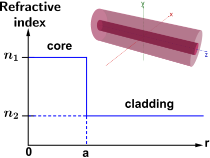
Method to compute modes:
- Solve the equation of propagation of the EM field in each layer
- Link the two solutions using the interface conditions
- Vector modes are the exact solutions of the Maxwell's equations.
- For these modes, the fields are generally not transverse: $e_z$ and/or $h_z$ are different form zero
- In each layer, the EM field satisfies the following equations of propagation: $$\left\{\begin{array}{ll} \Delta\vec{E}(\vec{r})+k_0^2n^2\vec{E}(\vec{r})=\vec{0} \\ \Delta\vec{H}(\vec{r})+k_0^2n^2\vec{H}(\vec{r})=\vec{0} \end{array}\right.$$
We only need to determine $e_z$ and $h_z$, since the other components of the fields are related to them by:
$$\begin{array}{ll}
&e_r=\frac{i}{n^2k_0^2-\beta^2}\left(\beta\frac{\partial e_z}{\partial r}+\sqrt{\frac{\mu_0}{\varepsilon_0}}\frac{k_0}{r}\frac{\partial h_z}{\partial \theta}\right)\\
&e_{\theta}=\frac{i}{n^2k_0^2-\beta^2}\left(\frac{\beta}{r}\frac{\partial e_z}{\partial \theta}-\sqrt{\frac{\mu_0}{\varepsilon_0}}k_0\frac{\partial h_z}{\partial r}\right)\\
&h_r=\frac{i}{n^2k_0^2-\beta^2}\left(\beta\frac{\partial h_z}{\partial r}-\sqrt{\frac{\varepsilon_0}{\mu_0}}\frac{k_0n^2}{r}\frac{\partial e_z}{\partial \theta}\right)\\
&h_\theta=\frac{i}{n^2k_0^2-\beta^2}\left(\frac{\beta}{r}\frac{\partial h_z}{\partial \theta}+\sqrt{\frac{\varepsilon_0}{\mu_0}}k_0n^2\frac{\partial e_z}{\partial r}\right)
\end{array}$$
$\Longrightarrow$ We will choose $e_z$ and $h_z$ purely imaginary such that $e_r$, $e_{\theta}$, $h_r$ and $h_{\theta}$ are real.
$2\pi$−periodicity in $\theta$ and interface conditions imply that ($\nu \in \mathbb{N}$ is the azimuthal number of the mode): $$e_z=\psi_e(r)\begin{pmatrix} \cos(\nu\theta)\\ \sin(\nu\theta) \end{pmatrix}\text{ and } h_z=\psi_h(r)\begin{pmatrix} -\sin(\nu\theta)\\ \cos(\nu\theta) \end{pmatrix}$$ The functions $\psi$ satisfy the differential Bessel equation: $$\boxed{\frac{\partial^2\psi(r)}{\partial r^2}+\frac{1}{r}\frac{\partial\psi(r)}{\partial r}+\left((k_0^2n^2-\beta^2)-\frac{\nu^2}{r^2}\right)\psi(r)=0}$$
If $(k_0^2n^2-\beta^2)>0$, solutions are the Bessel functions $J_{\nu}$ and $Y_{\nu}$.
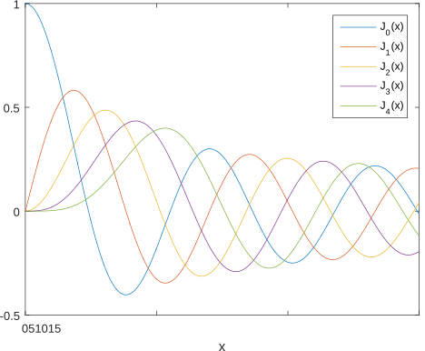
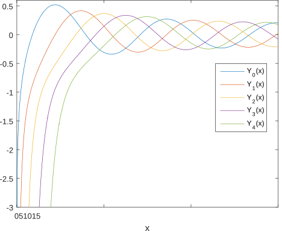
If $(k_0^2n^2-\beta^2)<0$, solutions are the modified Bessel functions $I_{\nu}$ and $K_{\nu}$.
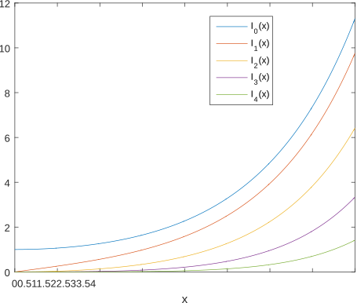
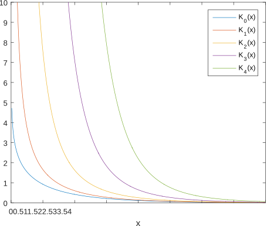
Guided modes:
- Core: $\psi(r)=AJ_\nu\left(\frac{Ur}{a}\right)$ with $U=k_0a\sqrt{n_1^2-n_{\text{eff}}^2}$
- Cladding: $\psi(r)=BK_\nu\left(\frac{Wr}{a}\right)$ with $W=k_0a\sqrt{n_{\text{eff}}^2-n_2^2}$
Interface conditions give: $$\boxed{\left(\nu n_{\text{eff}}\right)^2\left(\frac{V}{UW}\right)^4=\left(\frac{n_1^2J'_\nu(U)}{UJ_\nu(U)}+\frac{n_2^2K'_\nu(W)}{WK_\nu(W)}\right)\left(\frac{J'_\nu(U)}{UJ_\nu(U)}+\frac{K'_\nu(W)}{WK_\nu(W)}\right)}$$ where $V$ is the normalized frequency defined as: $$\boxed{V=k_0a\sqrt{n_1^2-n_2^2}=\sqrt{U^2+W^2}}$$ $\Longrightarrow$ We must determine the roots of this equation to find the effective indices of the guided modes.
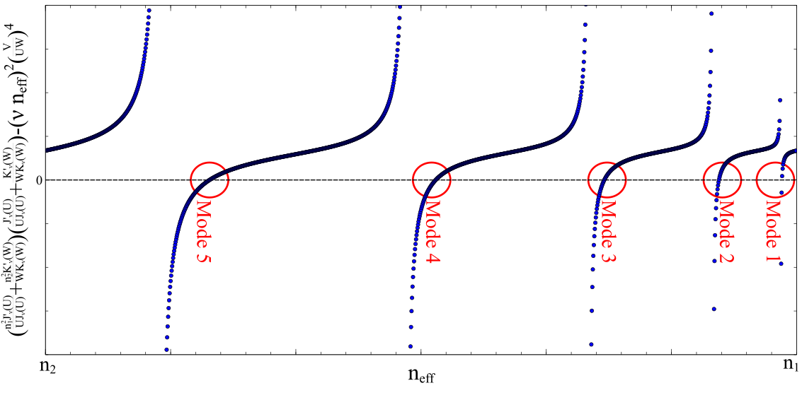
| $\nu$ | Mode | Degeneracy | Cut-off |
|---|---|---|---|
| 0 | TE$_{0,\nu}$ | 1 | $J_0(V)=0$, $V\neq 0$ |
| 0 | TM$_{0,\nu}$ | 1 | $J_0(V)=0$, $V\neq 0$ |
| 1 | HE$_{1\mu}$ | 2 | $J_1(V)=0$ |
| 1 | EH$_{1\mu}$ | 2 | $J_1(V)=0$, $V\neq 0$ |
| >1 | HE$_{\nu\mu}$ | 2 | $\frac{VJ_{\nu-2}(V)}{(\nu-1)J_{\nu-1}(V)}=\frac{-2\Delta}{1-2\Delta}$, $1-2\Delta=n_2^2/n_1^2$ |
| >1 | EH$_{\nu\mu}$ | 2 | $J_{\nu}(V)=0$, $V\neq 0$ |
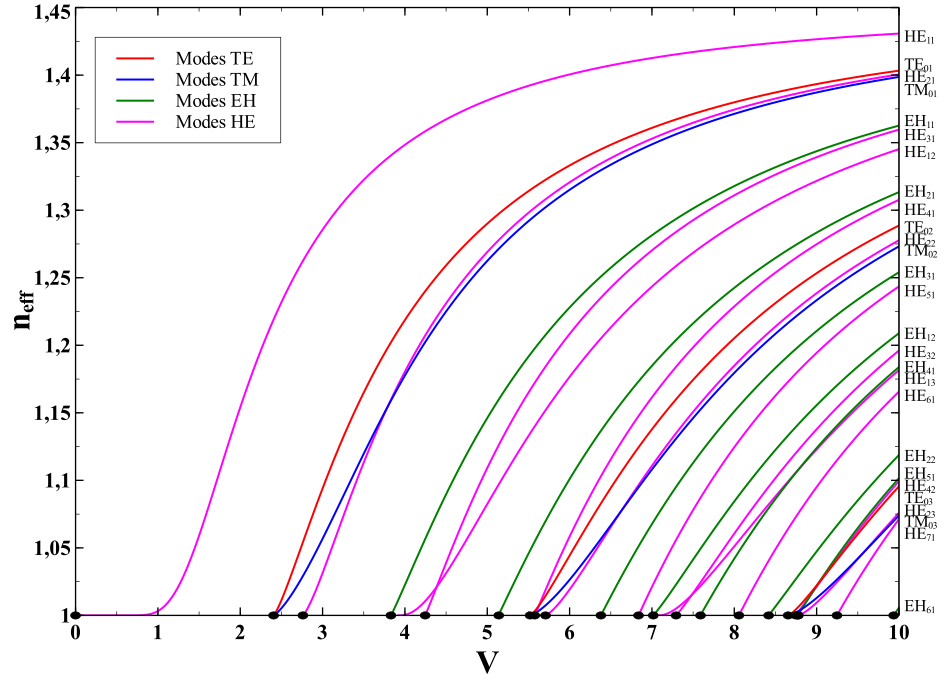
- The fiber is single-mode if $V<2.405$
- Fudamental mode $\equiv$ HE$_{11}$
- The LP modes are approximate modes of the fiber when using the weak guidance approximation: $\Delta n=n_1-n_2 \ll n_2$
- The LP modes are determined by the assuming that $e_z = h_z = 0$ (which is exact in the case of a uniform medium). $e_x$ and $e_y$ are then independent and the modes can be chosen Linearly Polarized along $x$ or $y$.
- For LP modes, the interface conditions impose the continuity of $e$ and $\frac{\partial e}{\partial r}$.
As with vector modes, symmetry requires $e(r,\theta)=\psi(r)\begin{pmatrix} \cos(\ell\theta) \\ \sin(\ell\theta) \end{pmatrix}$ and $\psi$ satisfies the Bessel differential equation: $$\frac{\partial^2\psi(r)}{\partial r^2}+\frac{1}{r}\frac{\partial\psi(r)}{\partial r}+\left((k_0^2n^2-\beta^2)-\frac{\ell^2}{r^2}\right)\psi(r)=0$$ For a guided mode:
- In the core: $\psi(r)=AJ_{\ell}\left(\frac{Ur}{a}\right)$
- In the cladding: $\psi(r)=BK_{\ell}\left(\frac{Wr}{a}\right)$
Interface conditions $\Longrightarrow$ $\boxed{U\frac{J'_\ell(U)}{J_\ell(U)}=W\frac{K'_\ell(W)}{K_\ell(W)}}$
| $\ell$ | Mode | Degeneracy | Cut-off |
|---|---|---|---|
| 0 | LP$_{0,m}$ | 2 | $J_1(V)=0$ |
| $\ge 1$ | LP$_{\ell,m}$ | 4 | $J_{\ell-1}(V)=0$, $V\neq 0$ |
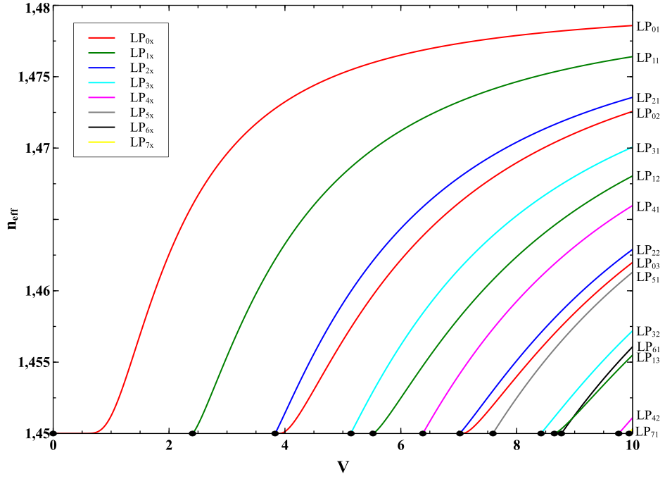
- The fiber is single-mode if $V<2.405$
- Fudamental mode $\equiv$ LP$_{01}$
In the weak guidance approximation, vector modes degenerate into LP modes and LP modes are therefore linear combinations of vector modes
| Scalar Modes | Vector Modes |
|---|---|
| LP$_{0,m}$ | HE$_{1,m}$ |
| LP$_{1,m}$ | HE$_{2,m}$, TE$_{0,m}$ and TM$_{0,m}$ |
| LP$_{\ell,m}$ | HE$_{(\ell+1),m}$ and EH$_{(\ell-1),m}$ |
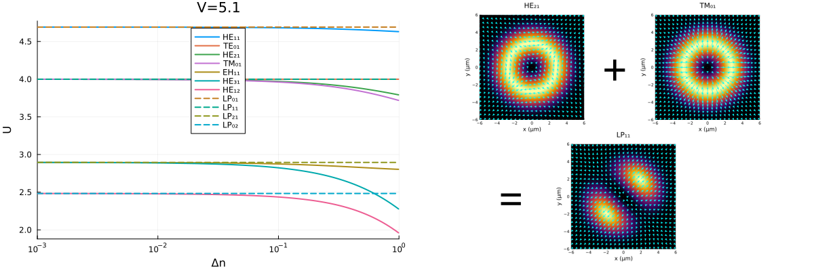
For a leaky mode:
- In the core: $\psi(r)=AJ_{\ell}\left(\frac{Ur}{a}\right)$
- In the cladding: $\psi(r)=BH^{(1)}_{\ell}\left(\frac{U'r}{a}\right)$ with $U'=k_0a\sqrt{n_2^2-n_{\text{eff}}^2}$ and $H^{(1)}_{\ell}(x)=J_{\ell}(x)+iY_{\ell}(x)$ is a Hankel function
Interface conditions $\Longrightarrow$ $\boxed{U\frac{J'_\ell(U)}{J_\ell(U)}=U'\frac{H^{(1)'}_\ell(U')}{H^{(1)}_\ell(U')}}$ To find roots in the complex plane, you can use:
- Classical root finding methods in 2D space: Newton-Raphson, Müller, etc.
- Complex analysis-based root finding methods (which use Cauchy's argument principle): Delves-Lyness method, Global complex Roots and Poles Finding algorithm, etc.
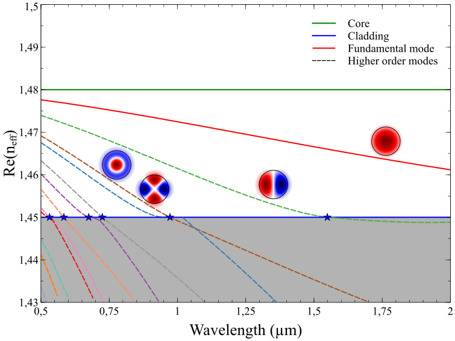
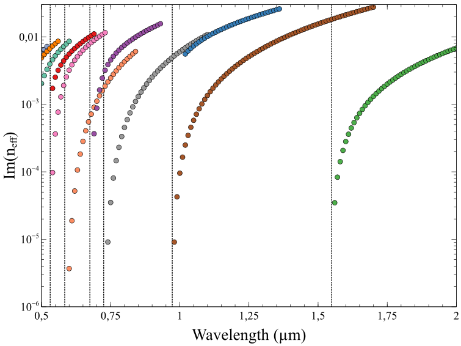
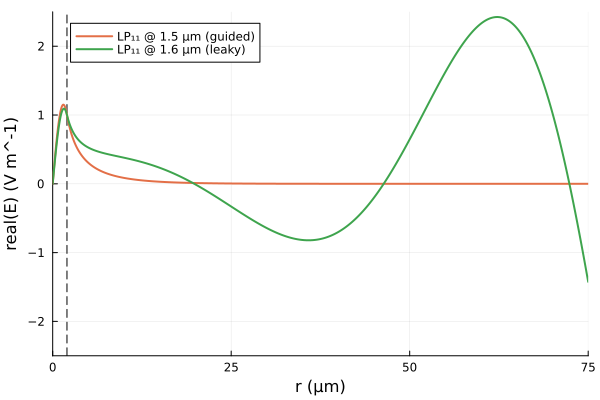
- For a step-index fiber, the confinement losses of leaky modes are very high
- $\text{Im}(n_{\text{eff}})=10^{-6}$ at $\lambda=1$ µm corresponds to $\alpha\simeq 8.6$ dB/m
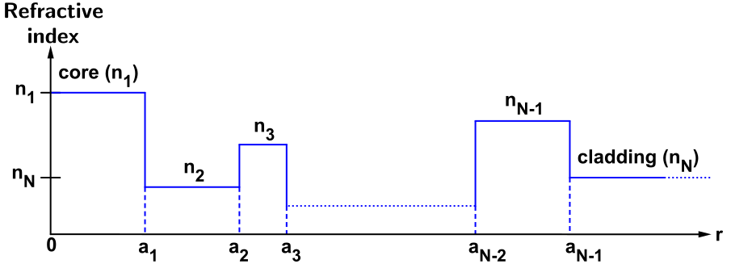
- Guided modes: $n_N < n_{\text{eff}} < \max(n_i)$
- Leaky modes: $\text{Re}(n_{\text{eff}}) < n_N$
Method:
- In the core: $E\backsim J_{\ell}\left(\frac{U_1r}{a_1}\right)$
- Compute the field in layers 2 to N-1 with interface conditions
- In the cladding: $E\backsim K_{\ell}\left(\frac{W_Nr}{a_{N-1}}\right)$ (guided mode) or $E\backsim H^{(1)}_{\ell}\left(\frac{U_Nr}{a_{N-1}}\right)$ (leaky mode)
- The interface condition applied at $r=a_{N-1}$ gives an equation that can be used to determine $n_{\text{eff}}$
Note: the process to find the root may take a long time if there are many layers, especially for leaky modes $\Longrightarrow$ it is best to have an approximate value for the effective index to reduce computation time.
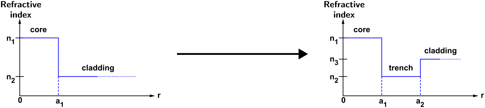
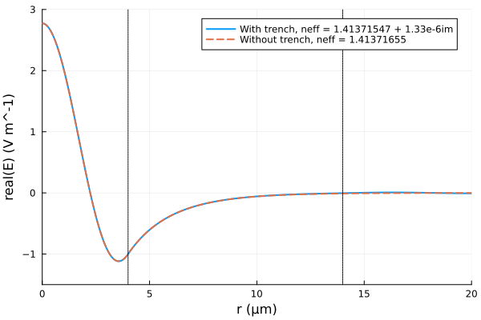

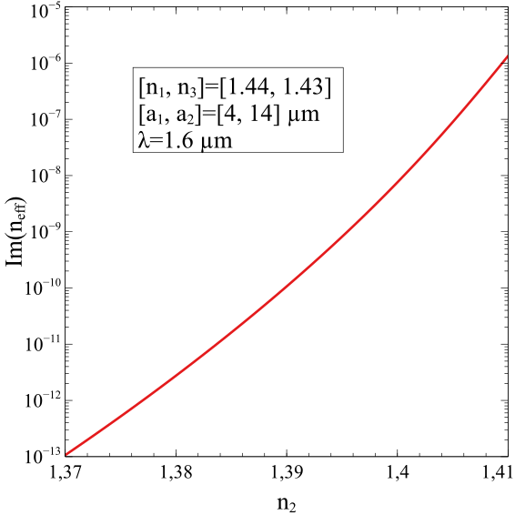
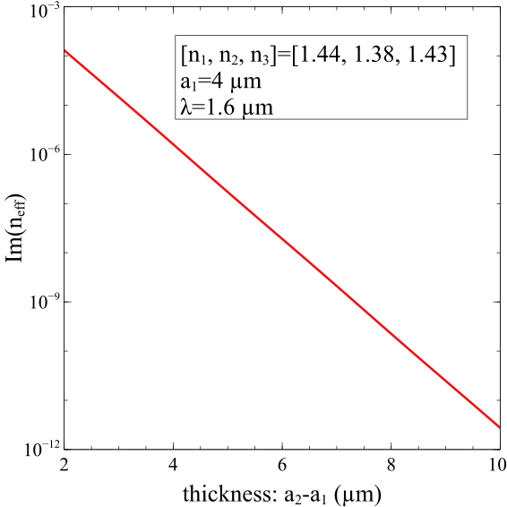
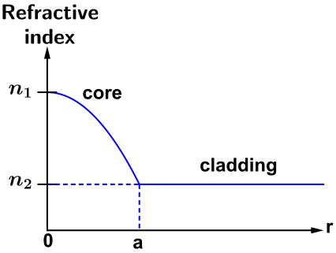
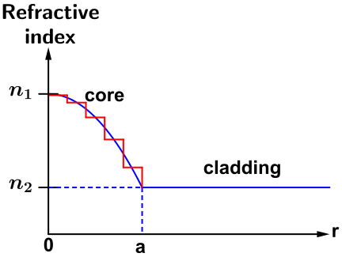
Maxwell's equations
- $\text{curl}\left( \vec{E}\right)=-\frac{\partial \vec{B}}{\partial t}$
- $\text{div} \left(\varepsilon \vec{E}\right)=0 \Longrightarrow \text{div} \left( \vec{E}\right)=-\text{grad} \left(\ln(\varepsilon) \right)\cdot\vec{E}$
- $\text{curl}\left( \vec{B}\right)=\mu_0\varepsilon \frac{\partial \vec{E}}{\partial t}$
- $\text{div}\left( \vec{B}\right)=0$
First method:
Discretize the core in layers which constant refractive index to obtain a multi-step index fiber. This method requires a large number of layers and is limited by the accuracy of the Bessel functions
There are, however, many other methods
$e_z=\psi_e(r)\begin{pmatrix} \cos(\nu\theta)\\ \sin(\nu\theta) \end{pmatrix}\text{ and } h_z=\psi_h(r)\begin{pmatrix} -\sin(\nu\theta)\\ \cos(\nu\theta) \end{pmatrix}$ where $\psi_e$ and $\psi_h$ satistify a system of coupled differential equations: $$\left\{\begin{array}{ll} \frac{d^2 \psi_e}{d r^2}=\psi_e\left(\frac{\nu^2}{r^2}-k_0^2n^2+\beta^2\right)+\frac{d \psi_e}{d r}\left(\frac{2\beta^2}{\left(k_0^2n^2-\beta^2\right)n}\frac{d n}{dr}-\frac{1}{r}\right)-\psi_h\sqrt{\frac{\mu_0}{\varepsilon_0}}\frac{2\nu\beta k_0}{r\left(k_0^2n^2-\beta^2\right)n}\frac{dn}{dr} \\ \frac{d^2 \psi_h}{d r^2}=\psi_h\left(\frac{\nu^2}{r^2}-k_0^2n^2+\beta^2\right)+\frac{d \psi_h}{d r}\left(\frac{2k_0^2n}{k_0^2n^2-\beta^2}\frac{d n}{dr}-\frac{1}{r}\right)-\psi_e\sqrt{\frac{\varepsilon_0}{\mu_0}}\frac{2\nu\beta k_0 n}{r\left(k_0^2n^2-\beta^2\right)}\frac{dn}{dr} \end{array}\right.$$ Shooting method to find guided and leaky modes:
- The coupled equations is expressed in a linear first order differential equation: $\begin{pmatrix} \psi_e \\ \psi'_e \\ \psi_h \\ \psi'_h \end{pmatrix} = A(r,\beta) \begin{pmatrix} \psi_e \\ \psi'_e \\ \psi_h \\ \psi'_h \end{pmatrix}$
- To begin with, we use a thin layer between $r=0$ and $r=\epsilon\ll a$ with a constant refractive index: $\psi_e=J_{\nu}\left(\frac{Ur}{\epsilon}\right)$ and $\psi_h=\alpha J_{\nu}\left(\frac{Ur}{\epsilon}\right)$
- A value of $n_{\text{eff}}$ is chosen and the system of differential equations is solved between $r=\epsilon$ and $r=a$ with a RK method for two values of $\alpha$ (generally 0 and 1).
- By applying the interface conditions, we find a matching function that is zero if the value of neff corresponds to a mode
$h_r=A_r(r)\begin{pmatrix} \cos(\nu\theta)\\ \sin(\nu\theta)\end{pmatrix}$ and $h_{\theta}=A_{\theta}(r)\begin{pmatrix} \sin(\nu\theta)\\ \cos(\nu\theta)\end{pmatrix}$ where $A_r$ and $A_{\theta}$ satistify a system of coupled differential equations: $$\left\{\begin{array}{ll} \frac{1}{r}\frac{d}{dr}\left(r\frac{dA_r}{dr}\right)-\frac{1+\nu^2}{r^2}A_r+k_0^2n^2A_r\pm\frac{2\nu}{r^2}A_{\theta}=\beta^2A_r \\ \frac{1}{r}\frac{d}{dr}\left(r\frac{d A_{\theta}}{dr}\right)-\frac{1}{r}\frac{d \ln(n^2)}{dr}\frac{d}{dr}\left(rA_{\theta}\right)-\frac{1+\nu^2}{r^2}A_{\theta}+k_0^2n^2A_{\theta}\pm \nu\left(\frac{1}{r}\frac{d \ln(n^2)}{dr}+\frac{2}{r^2}\right)A_r=\beta^2A_{\theta} \end{array}\right.$$ Discrete Hankel transform to find guided modes:
- $A_r$ and $A_{\theta}$ are expanded in a finite Fourier-Bessel series: $$f(r)=\sum_{i=1}^{N} f_iJ_n\left(\frac{j_{ni}r}{R}\right)$$ where $j_{ni}$ is the i-th root of $J_n$ and we assume that the field is zero for $r=R>a$
- Apply the Hankel transform on the system of equations: $H\left(f(r)\right)=F(k)=\int_0^{\infty}rf(r)J_n\left(k r\right) dr$
- This gives us an eigenvalue problem $Ax=\beta^2x$, which be solved to determine the modes
$e(r,\theta)=\psi(r)\begin{pmatrix} \cos(\ell\theta) \\ \sin(\ell\theta) \end{pmatrix}$ where $\psi$ satisfies the following differential equation:
$$\frac{\partial^2\psi(r)}{\partial r^2}+\frac{1}{r}\frac{\partial\psi(r)}{\partial r}+\left((k_0^2n^2\textcolor{red}{(r)}-\beta^2)-\frac{\ell^2}{r^2}\right)\psi(r)=0$$
$\Longrightarrow$ analytical solution: if $n^2$ is parabolic, it is possible to perform a change of variables to reduce this equation to Kummer's equation whose solutions are confluent hypergeometric functions.
Otherwise:
- Shooting method
- Hankel transform
- Finite difference or finite element method
Finite difference method:
$\Longrightarrow$ discretize the space with a step $h$ between $r=0$ and $r=R < a$ (for guided modes, we assume $E(R)=0$)
$$\frac{\partial\psi}{\partial r}(r_i)\simeq \frac{\psi_{i+1}-\psi_{i-1}}{2h}\text{ and } \frac{\partial^2\psi}{\partial r^2}(r_i)\simeq \frac{\psi_{i+1}+\psi_{i-1}-2\psi_i}{h^2}$$
Take into account the boundary conditions at $r=0$:
- For $\ell=0$, $\psi(r=0)=1$ and $\frac{\partial \psi}{\partial r}(0)=0$
- For $\ell\neq 0$, $\psi(r=0)=0$ and $\frac{\partial \psi}{\partial r}(0)=1$
And this gives an eigenvalue problem: $$\begin{pmatrix} a_1 & b_1 & 0 & \cdots & 0\\ c_2 & a_2 & b_2 & \ddots & \vdots\\ 0 & c_3 & a_3 & \ddots & 0\\ \vdots & \ddots & \ddots & \ddots & b_{N-1}\\ 0 & \cdots & 0 & c_N & a_N \end{pmatrix}\begin{pmatrix} \psi_1 \\ \vdots \\ \psi_N \end{pmatrix}=\beta^2\begin{pmatrix} \psi_1 \\ \vdots \\ \psi_N \end{pmatrix}\text{ with }\left\{\begin{array}{lll} a_i=-\frac{2}{h^2}+k_0^2n^2(r_i)-\frac{\ell}{r_i^2} \\ b_i=\frac{1}{h^2}+\frac{1}{2hr_i} \\ c_i=\frac{1}{h^2}-\frac{1}{2hr_i}\end{array}\right.$$
Finite element method:
By multiplying the equation satisfied by $\psi$ by $rv(r)$ where $v(r)$ is a test function ($v\in V=\left\{v\in H^1_r(0,R) \vert v(R)=0\right\}$), we obtain:
$$\int_0^R\frac{\partial}{\partial r}\left(r\frac{\partial\psi}{\partial r}\right)v(r)dr+\int_0^R\left(k_0n^2(r)r-\frac{\ell^2}{r}\right)\psi(r)v(r)dr=\beta^2\int_0^Rr\psi(r)v(r)dr$$
By integrating the first term in parts, we obtain the weak formulation:
$$-\int_0^R r\frac{\partial\psi}{\partial r}\frac{\partial v}{\partial r}dr+\left[r\frac{\partial\psi}{\partial r}v(r)\right]_0^R+\int_0^R\left(k_0n^2(r)r-\frac{\ell^2}{r}\right)\psi(r)v(r)dr=\beta^2\int_0^R r\psi(r)v(r)dr$$
Since v(R)=0, the boundary term is zero:
$$-\int_0^R r\frac{\partial\psi}{\partial r}\frac{\partial v}{\partial r}dr+\int_0^R\left(k_0n^2(r)r-\frac{\ell^2}{r}\right)\psi(r)v(r)dr=\beta^2\int_0^R r\psi(r)v(r)dr$$
Then we apply the finite element method: in each element, $u=\sum_j u_j N_j(r)$ and $v=u_i(r)$ where $u_i$ are the shape functions (generally Lagrange polynomials). This gives a generalized eigenvalue problem:
$$Au=\beta^2Bu$$
In both cases, we have to solve an eigenvalue problem:
- $Au=\beta^2u$ for the finite difference method
- $Au=\beta^2Bu$ for the finite element method
$A$ and $B$ are very large sparse matrices, and we don't need all the eigenvalues, but only those that correspond to the guided modes. There are various algorithms for computing eigenvalues close to an approximate value $\sigma$:
- IRAM (Implicitly Restarted Arnoldi Method) used by Lumerical, Comsol Multiphysics, RSoft, Optiwave, FreeFEM++, eigs function of scipy (they use the ARPACK library)
- Krylov-Schur used by eigs function of Matlab (since R2017b), ArnoldiMethod.jl package in Julia and SLEPc library (used by FEniCS)
- Jacobi-Davidson implemented in SLEPc library
At each iteration, these algorithms need to solve $(A-\sigma I)x=0$ and generally use the LU factorization of the matrix $(A-\sigma I)$. There are also various algorithms/libraries for doing this: LAPACK, UMFPACK, MUMPS, PARDISO, CUDSS (for NVIDIA GPUs), etc.
But how do we calculate the leaky modes?